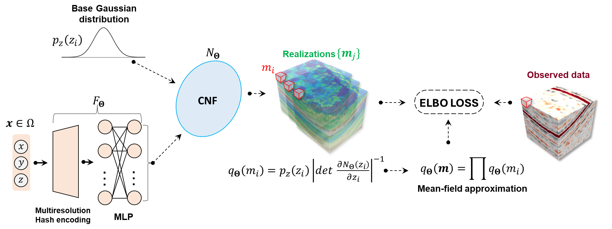

Bayesian seismic inversion with implicit neural representations
Juan Romero, Wolfgang Heidrich, Matteo Ravasi
Geophysical Journal International

Schematic representation of the BIS-Flow framework. Input coordinates are processed through a non-linear mapping module to produce a context vector, which is fed into the CNF along with samples from the base distribution. The output of the CNF provides both samples and log probabilities from a non-parametric proposal distribution, which are used to compute the terms of the ELBO loss.
Abstract
Seismic inversion translates seismic data into subsurface elastic property models, enabling geophysicists to better understand underground rocks and fluids. Due to the inherently ill-posed nature of this inverse problem, accurately capturing the uncertainty associated with the solution is essential for reliable interpretations. Traditional Bayesian inversion methods, such as Markov Chain Monte Carlo (MCMC) and Laplace approximations, have been employed for this purpose but face significant limitations in terms of scalability and computational efficiency for large-scale problems. Combined with deep learning, Variational Inference (VI) has emerged as a promising alternative, striking a balance between computational efficiency and flexibility (i.e., the ability to approximate complex posterior distributions). However, selecting an appropriate proposal distribution remains a key challenge, as it directly influences the quality of the estimated posterior distribution. In this study, we extend IntraSeismic, an implicit neural representation (INR)-based framework for seismic inversion applications, to Bayesian inversion using VI with different parameterizations of the proposal distribution. We introduce two methods: B-IntraSeismic (BIS), which uses a mean-field Gaussian proposal, and B-IntraSeismic with Conditional Normalizing Flows (BIS-Flow), which utilizes a mean-field unparameterized proposal distribution to better capture deviations from Gaussianity in the posterior distribution. These methods are evaluated on a synthetic dataset (Marmousi) and two field data (Volve and Sleipner). Our results indicate that both BIS and BIS-Flow can accurately capture structural details and produce high-resolution mean models and standard deviation maps. BIS-Flow is also shown to be able to model complex posterior distributions, offering a more comprehensive characterization of uncertainty while maintaining computational feasibility.
Paper
Paper [Romero2025BIS.pdf (4.0 MB)]
Code [https://github.com/DeepWave-KAUST/B-IntraSeismic-pub]